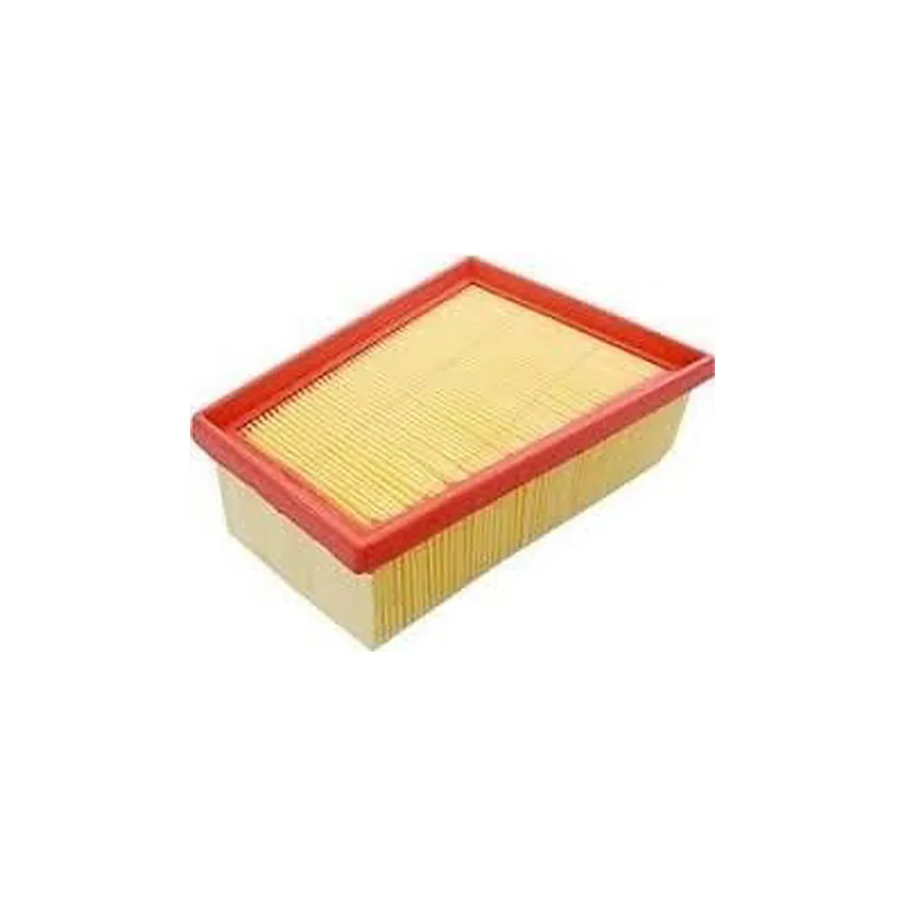

Elem. filtrante do ar Sandero 2010-2014, Duster 2012-2013 Mann-filter
Avaliações de clientesR$ 54,90
no Pix
Peça de carro: entrega no mesmo dia de segunda a sexta, para pedido até 12h. Pedido de sábado chega na segunda até as 14h.
- Entrega pelo motoboy da loja de segunda a sexta. Pedido até 12h chega no mesmo dia
- A loja confere a peça pela placa do carro no WhatsApp antes do Pix
- Não serviu? O motoboy busca e troca em até 7 dias
- Garantia de 90 dias contra defeito de fabricação
- Loja de Vila Velha, CNPJ 46.178.859/0001-96
- Como funciona a troca e a garantia
Leve junto
Faltam R$ 75,00 para o frete grátis. Servem no mesmo carro e vão na mesma entrega.


Detalhes
Elem. filtrante do ar Sandero 2010-2014, Duster 2012-2013 Mann-filter. Peça nova, marca Mann-filter, código C1858/4. Entrega por motoboy no mesmo dia na Grande Vitória.
- Medidas
- Não informado
- Material
- Não informado
- Serve em
- Sandero, 2010 a 2014
- Duster, 2012 a 2013
- Marca
- Mann-filter
- Código
- C1858/4
- Garantia
- 90 dias contra defeito de fabricação. Troca em até 7 dias se não servir.
Avaliações de clientes
Carregando avaliações…